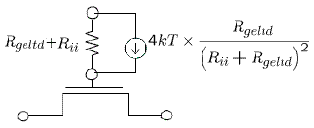

BSIM4 Version 6
GISL and GIDL Leakage Module
Four new parameters have been added.
Junction Diode I-V
In BSIM4.5.0, the junction diode current due to the trap-assisted tunneling current in space-charge region has same set of parameters for both source and drain junctions.
Gate Tunneling Current
In BSIM4.5.0, the gate tunneling current in the overlapping S/D diffusion regions (IGS / IGD) share the same set of parameters for both source and drain ( DLCIG, AIGSD, BIGSD, CIGSD).
In BSIM4.6.0, the parameters for IGS and IGD are separate.
Mobility Model
The coulomb scattering term has been modified in BSIM4.6.0 release to avoid the possibility of non-monotonic drain current trend with respect to gate voltage.
Improvement to NOIMOD = 2

Return to top